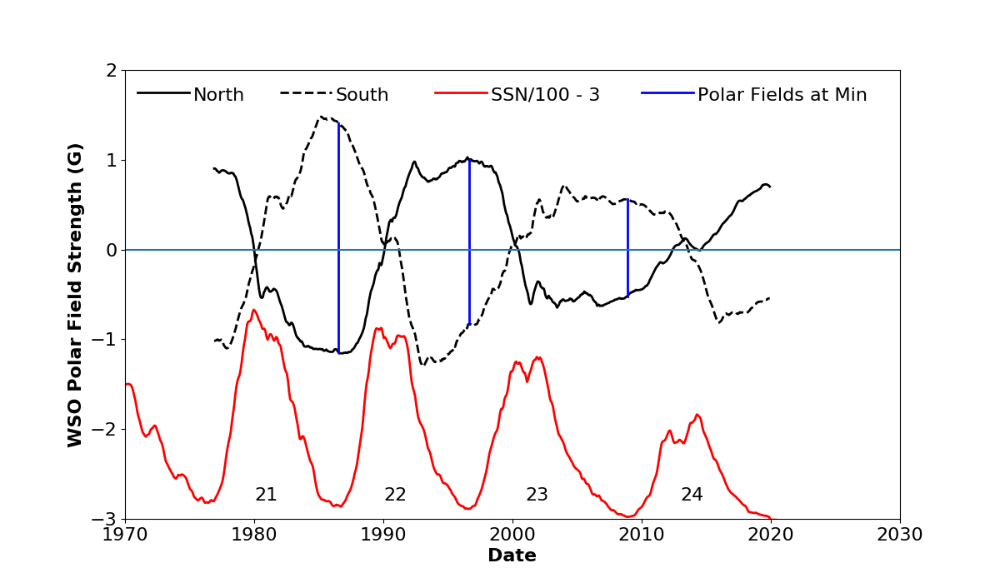

<!DOCTYPE html>
<html lang="en">
<head><meta charset="utf-8">
</head>
<body></body>
</html>
<p><br />
<title>Discover the Sun!</title>
</p>
<link href="bin" rel="shortcut icon" /><!-- Core CSS -->
<link href="css/solarcycle2.css" rel="stylesheet" /><!-- Custom CSS -->
<link href="css/solarcycle3.css" rel="stylesheet" />
<link href="css/solarcycle4.css" rel="stylesheet" /><!-- Custom Fonts --><!-- Page Content -->
<div class="container"><!-- Page Heading/Breadcrumbs -->
<h1 class="BoldBlueHeader" style="height: 39px">&nbsp; Solar Cycle Science <small>Discover the Sun!</small></h1>

<div class="row">
<div class="col-lg-12">
<ol class="breadcrumb">
	<li><a href="index.html">Home</a></li>
	<li class="active">Polar Fields Page</li>
</ol>
</div>
</div>
<!-- /.row --><!-- Content Row -->

<div class="row"><!-- Sidebar Column -->
<div class="col-md-3">
<div class="list-group"><a class="list-group-item" href="index.html">Home</a> <a class="list-group-item" href="basics.html">Basics</a> <a class="list-group-item" href="activeregions.html">Active Regions</a> <a class="list-group-item" href="flows.html">Surface Flows</a> <a class="list-group-item" href="flowprofiles.html">Axisymetric Flow Profiles</a> <a class="list-group-item" href="giantcells.html">Giant Cell Maps</a> <a class="list-group-item" href="polarfields.html">Polar Fields</a> <a class="list-group-item" href="solarcycle.html">Solar Cycles</a> <a class="list-group-item" href="aft.html">Advective Flux Transport</a> <a class="list-group-item" href="baseline.html">Baseline Maps</a> <a class="list-group-item" href="forecasts.html">Predictions</a> <a class="list-group-item" href="media.html">Media</a> <a class="list-group-item" href="people.html">People</a> <a class="list-group-item" href="more.html">More</a></div>
</div>
<!-- Content Column -->

<div class="col-md-9" style="left: 0px; top: 0px">
<h2 class="BlueHeader">Discover the Polar Fields!</h2>


<div class="Blue2_lightBG">

Most solar physicists agree that the Sun&#39;s polar magnetic fields at solar minimum are the seeds to the next <a href="solarcycle.html">solar cycle</a>. Indeed, observations have shown that the strength of the polar fields is a good indicator of the strength of the next cycle. Interestingly, the polar fields observed after the Cycle 23 maximum became about half as strong as observed for the previous two cycles. This was followed by an extended Cycle 23/24 minimum and what is proving to be the weakest solar cycle in at least a hundred years. This has caused speculation that the Sun may be entering another Maunder Minimum. With such unusual solar conditions in our midst, solar physicists are becoming more motivated to determine exactly how magnetic flux is transported to the poles and how the polar fields are modulated.


<div class="BGCaption">
<figure>
<figcaption>Polar Field Strengths, Updated Daily.</figcaption>
</figure>
</div>

<div class="BGCaption">
<figure>
<figcaption>Polar Field Bordering the Magnetic Butterfly Diagam, Updated Daily.</figcaption>
</figure>
</div>


<div class="BGCaption">
<figure>
<figcaption>Polar Field Strengths. This image shows the variation in the strength of the polar fields over the last three solar cycles. Polar field strengths during the Cycle 23/24 minimum were much weaker (1/2) than for the prior two minima.</figcaption>
</figure>
</div>
</div>
</div>
</div>
<!-- /.row -->

<hr /><!-- Footer -->
<footer>
<div class="row">
<div class="col-lg-12">
<p class="Copyright">Copyright &copy; SolarCycleScience.com 2017</p>
</div>
</div>
</footer>
</div>
<!-- /.container -->